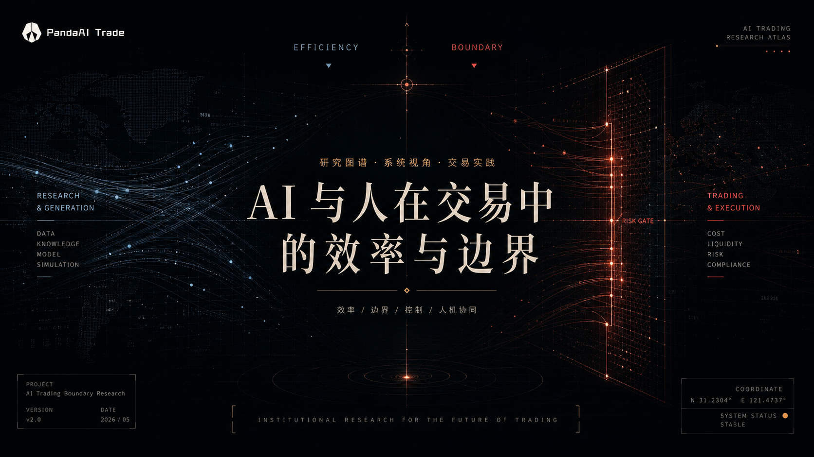
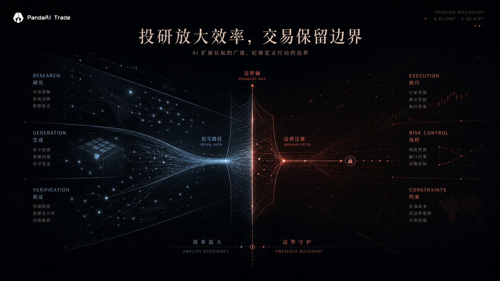
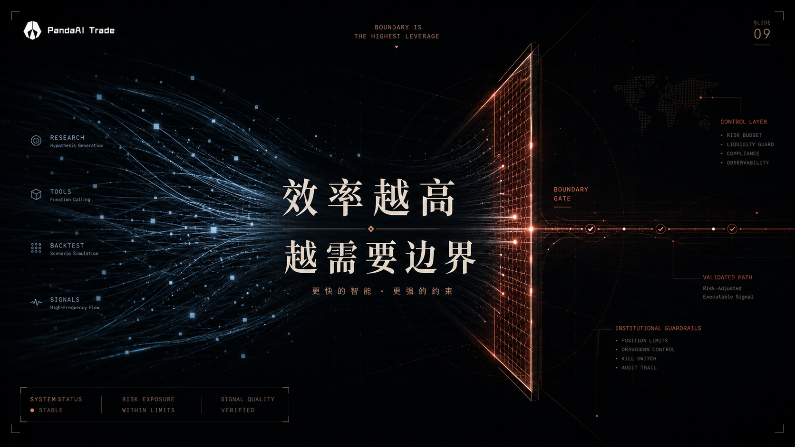

AI TRADING BOUNDARY ATLAS
AI 与人在交易中的
效率与边界
关于 AI 量化工具、交易实践与系统边界的阶段思考
CORE QUESTION
AI 在交易链路中的位置
真正的问题，不是 AI 能不能交易，而是 AI 在交易链路中应该站在哪里。
效率放大
生成与验证
边界控制

EFFICIENCY / BOUNDARY
投研放大效率，交易保留边界
投研侧强调效率，交易侧强调边界。
投研侧
- 多轮检索
- 多次生成
- 多次回测
- 多次复盘
交易侧
- 真实成本
- 仓位变化
- 风险暴露
- 权限约束
RESEARCH DISTANCE
从想法到验证的距离
AI 先改变的，是从想法到验证的距离。
FROM TOOL TO SYSTEM
个人效率，会走向系统效率
当效率问题进入机构场景，它不再是个人工具问题，而是系统建设问题。
SYSTEM PROOF
机构投研系统
机构投研的效率，不在于一个环节，而是可延续的链路系统。
国泰海通 AI 智能因子投研系统
CAPABILITY ARCHITECTURE
能力组织：Data / Skill / Agent
只会回答问题的 AI，还进不了交易流程。
MULTI-AGENT ORCHESTRATION
知识工程与多智能体编排
复杂的投研任务，需要工程化的体系。

BOUNDARY IS THE HIGHEST LEVERAGE
效率越高
越需要边界
AI 可以降低研究与工程门槛，但不会降低市场赚钱的门槛。
VALIDATION BOUNDARY
研究结果的验证边界
AI 可以加速试错，但不能替代验证。
ADOPTION BOUNDARY
交易结果的控制边界
AI 的回答，不等于系统可以采用的结果。
普通 AI 输出
生成文本
看起来合理
没有明确权限
错误难追踪
建议直接给人
生产级金融 Agent
输出结构化结果
输入条件可检查
输出权限可分级
失败可归因
进入审计与控制层
PRODUCTION-GRADE FINANCIAL AGENT
生产级金融 Agent
输出进入交易系统，关键就从“回答质量”变成“可采用性”。
HUMAN POSITION
AI 不能替人承担交易后果
AI 可以整理、分析、提醒和复盘；人仍然定义目标、风险承受、范式选择和最终责任。
EXPERIENCE STRUCTURE
交易员的经验，能不能变成 AI 分身？
显性规则、复盘逻辑、交易记录和术语体系可以沉淀；但盘感、风险承受和最终判断不能简单外包。
可沉淀
交易记录
复盘逻辑
术语体系
固定规则
可逼近
风格偏好
盘感片段
下单节奏
模式识别
必须保留
最终责任
风险承受
模式内 / 外判断
范式切换
DUAL-SOURCE VALIDATION
双源验证
成熟交易者的历史行为和复盘逻辑，可以交叉验证，沉淀为交易 Skill；最终判断仍由交易者保留。
交割数据
买入时机
涨幅位置
持仓时间
盈亏
复盘笔记
锚定物
题材判断
情绪周期
操作依据
PATTERN DISTILLATION
交易模式蒸馏案例
把经验变成可提醒、可复盘、可迭代的系统。
PANDAAI INFRASTRUCTURE
把效率放进边界，把 AI 放进系统
PandaAI 的目标，是把数据、知识、Skill、Agent、工作流、回测、仿真、实盘、审计和复盘组织成可运行、可追踪、可迭代的 AI 量化基础设施。